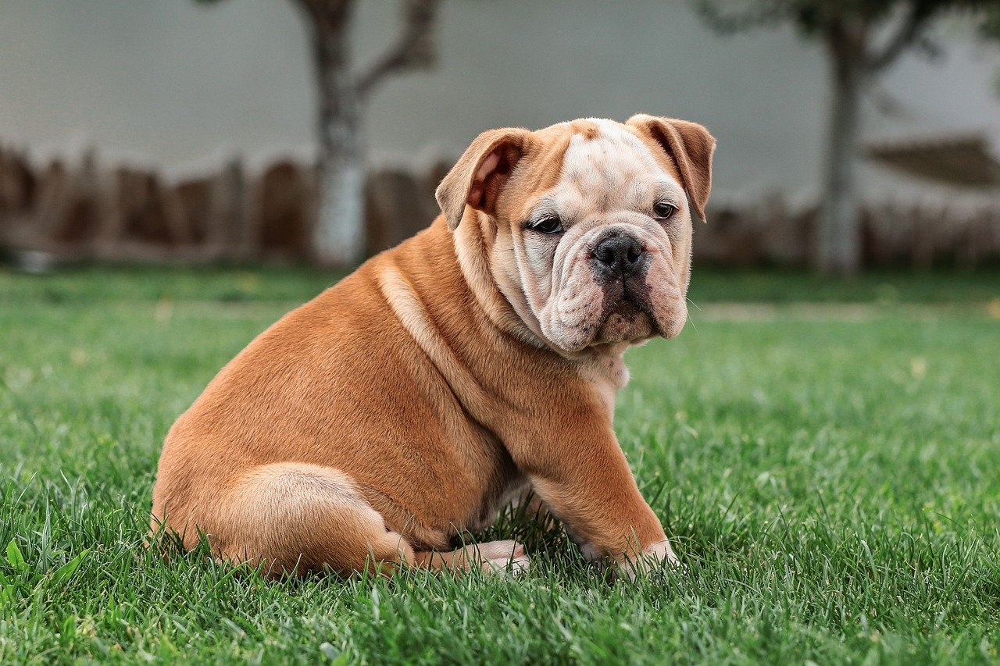
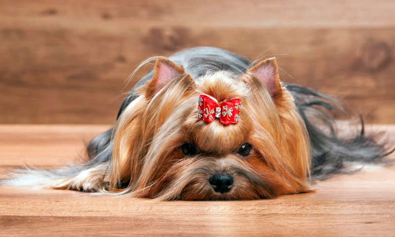
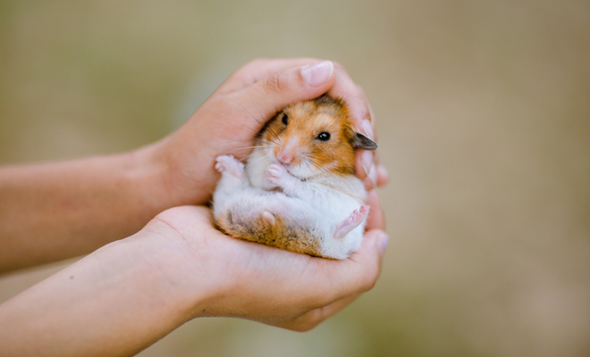

Bienvenios a nuestro centro de Adopcion
Todos nuestros animales buscan un hogar responsable y seguro, contaras con nuestro asesoramiento en todo el camino para ayudarte a escoger tu mascota ideal
Nuestra casa

Los animale necesitan cariño

Todos merecemos amor
Para muchos de nosotros las mascotas no son simples compañeros, son miembros de la familia.

Cloe

Simon

Clementina
